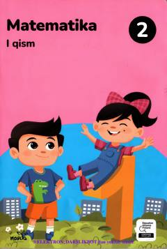

M2Umumiy o'rta ta'lim maktablarining 2-sinf o'quvchilari uchun matematika darsligi.
Ushbu darslik umumiy o'rta ta'lim maktablarining 2-sinf o'quvchilari uchun mo'ljallangan bo'lib, matematika fanidan dastlabki tushunchalarni hamda 100 gacha bo'lgan sonlar ustida amallarni o'rgatadi. Kitobda mantiqiy masalalar, rasmli va amaliy topshiriqlar o'rin olgan.